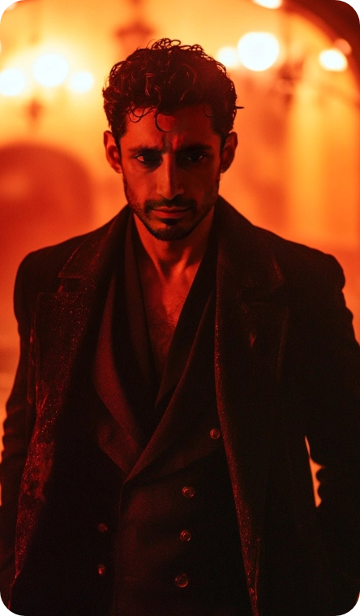
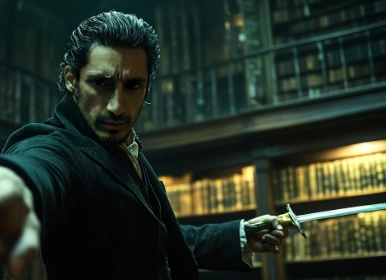
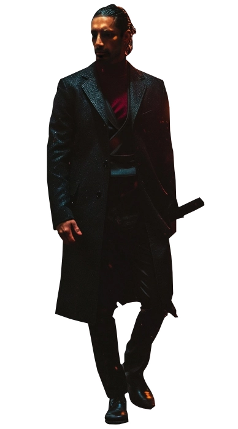
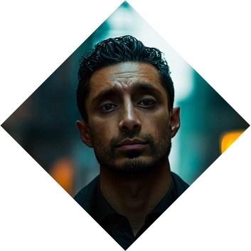
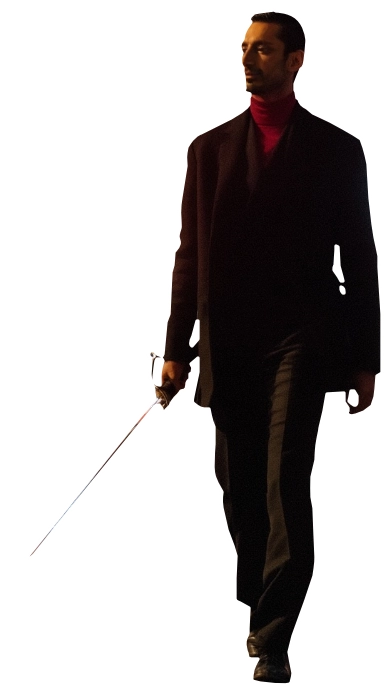

Amir
Amir
The Judge
Amir, a formidable vampire, assumes the mantle of judge in the ethereal realm. With an unwavering commitment to justice, he dispenses retribution to those among the undead who tread the path of injustice and chaos. Tasked with maintaining order among his kindred, Amir stands as a beacon of impartiality, willing to confront even his brethren when their actions defy the laws of their nocturnal existence.
In the shadows, he is a silent arbiter, ensuring the delicate balance of the vampire society is preserved through the careful meting out of consequences. Amir's dedication to upholding righteousness in the otherworldly domains marks him as both a feared adjudicator and a guardian of vampiric order. ❧
Plot Hooks.
Justice. Anything that has to do with Justice, Laws and interpreting the rules. He works in favor of defeating the unjust, even if that at times puts him at odds with his own kind. Smut wise, he likes to indulge with figures of authority with evident display of power, usually with him manhandling them and submitting them.Signature Motif.
Silence. He often stays quiet, introspective and secure, he is like a steady river bed that seems calm and tranquil but carries deep strong under currents. Only those worthy of him can get to know that inner wellspring.Perfect for...
Rewarding Romantic Threads. He is a gentle and caring soul that can make space for your muse's love one second and at the next cut the head off his enemies. A romantic muse through and through. Expect some D/s and power play.Goal
Tranquility.
The Eternal Struggle is a never ending battle between factions, sects, groups and individuals within the Midnight Societies which want to possess and amass power to survive. He's against the idea of Vampires possessing "too much power", because it leads to putrefaction. He understands Cainites are a destroying forces of nature that wither everything they touch, so why not touch that which needs to be withered?
obstacle
The Camarilla.
However, he works for the powers to be. He fools himself believing that the Camarilla knows what it's doing and that it's too big to fail and within this lie hides the fact that he ends up serving nefarious purposes while covering their errors and mishaps as a Sheriff.«Yet you feed us lies from the tablecloth»
Personal Data

Amir Gaddafi
Full Name
42
Apparent age
09/Dec/1945
DOB
Camarilla
Sect
Brown
Hair
Brown
Eye color
Banu Haquim
clan
Pakistani / British
Ethnicity
British
Nationality
Ancillae
Rank
1.73m
Height
78 kg
Weight
English
Languages
Male
Gender
Homosexual
Preference
Sheriff
Profession
Top
Position
7" / 5"
length / Girth
Riz Ahmed
Faceclaim
80
Real Age
INTP
MBTI
Character sheet
Attributes
Distinctions
skills
Predator
Blood Leech

Nature
Visionary
Demeanor
Vigilante


Determined
Inspirational
Creative
Optimistic
Persuasive
Idealistic
Fanatical
Impractical
Naïve
Irrational
Inspirational
Creative
Optimistic
Persuasive
Idealistic
Fanatical
Impractical
Naïve
Irrational
Just
Resolute
Determined
Courageous
Protective
Ruthless
Vengeful
Inflexible
Obsessive
Judgmental
Resolute
Determined
Courageous
Protective
Ruthless
Vengeful
Inflexible
Obsessive
Judgmental
Strength
Dexterity

Stamina

Charisma
Manipulation
Composure
Intelligence
Wits
Resolve
Potency
🙪
Specialties
Inspiration
Arrows
Motivation
Stoic
Meele
Insight
Brawl
Awareness
Occult
Empathy
Intimidation
Firearms
Subterfuge
Athletism
Investigation
Politics
Survival
Drive
Technology
Other skills

The Blood
Gifts
Vampiric Mending
Can heal all the damage in a scene. Wounds close and limbs reattach (if they haven't been lost for more than one hour).
Blood Surge
Can add a D6 to any attribute so long he's willing to loose blood in the process.
Blush of Life
Dramatic. When required, Amir can mimic the bodily functions of a human: warmth, breathing, even bowel movement. Pretending to eat food is also possible.
Curse
Bane: Frenzy for Blood
Once he tastes the blood of another vampire, he finds it really difficult to stop. When tasting another vampire he will not stop until having drained said vampire in it's entirety.
Compulsion: Judgement
When failing a dice roll he will enter into Compulsion. Judgement will be called, forced him to drink blood from someone who acts against their own Convictions.
Resonance: Choleric
Dramatic. Normally he will choose passionate and full of conviction individuals to taste their blood. Angry and violent individuals are also on the menu, re only in the target if they enact said anger and violence against others.
Disciplines

Obfuscate
stealth
Silence of Death / Unseen Passage / Ghost in the MachineAmir can move with fast and silent steps, going unnoticed so long he doesn't draw attention to himself. Most people will ignore his presence even if they are seeing him right up and any electronic devices that could capture his face capture just a blur or a glitch. Add up to 2D6 to any Stealth rolls. He can also add a D6 to go unnoticed if there are machines present.
Celerity
Movement
Rapid Reflexes / FleetnessAmir can move quite quickly to avoid damage or to throw objects as well as to deflect. It allows him to recharge weapons or draw a bow dramatically fast. It does not allow him to cause damage. Add one D6 to Athletics rolls when used.
Blood Sorcery
Magic
A Taste of Blood He will be able to detect most of the details of the vampire's blood when tasted. It works on other supernaturals provided he knows them. Dramatic. Up the Effect Dice +1 category when tasting someone's blood.
Corrosive Vitae He's able to use his blood as a potent acid that can destroy non-organic material at touch. Dramatic. If necessary, create a D6 advantage to destroy material.
Scorpion's touch He's able to coat his own sword with his blood, creating a potent toxin that renders mortals unconscious on touch and that makes other vampires slow. Choose: Add a D6 to Melee rolls or reroll a Hitch for Melee rolls.
Theft of Vitae Amir is able to look at a mortal and beckon their blood on call, pulling it out of a vein that will burst when beckoned. The mortal has to be within visual range for the Power to work. Dramatic. If it were to create harm, up the effect Dice +1 category.
Rituals
I
level
Blood Walk Expands the powers of "A Taste of Blood".
Clinging of the Insect When drinking the concoction, Amir (or any other vampire) can climb walls like an insect would do for the rest of the night. Up your effect dice +1 category when rolling Athletics to climb walls.
II
Level
Illuminate the Trail of Prey Using a photo and a white ribbon, Amir can concentrate and find the prey by following a white trail that is only vissible to him. Dramatic. If required, add a D6 to Survival threads when chasing after a prey.
Ishtar's Touch Amir can create a concoction with his own blood and other drugs, rendering the victim inhibited and vulnerable to other disciplines. Dramatic.
III
Level
One with the Blade Known for his terrifying power, he can create a beautiful blade that is immaculate to time and other damage while in his hand. Choose: Reroll any hitches or add a D6 on Meele rolls.
Dagon's Call After smearing his blood on the skin of a mortal/vampire, he can perform a powerful spell within 7 days where blisters of pus and blood form in the skin of their victim causing tremendous damage to mortals and serious damage to Kindred. Dramatic.
Backgrounds



Signature Assets
Unbondable
Whether by his strong will or the desire to subdue his fellow vampires, Amir has the strange quality that he can drink vampire blood and suffer not the effects of it's addictive properties. Quite handful for a man who has, allegedly, Diablerized a few fellow immortals...
Status
When the influence of the Sabbat fell to the Second Inquisition, the vampires of the Camarilla decided to repopulate the Montréal area. Having faced Project Twilight already in London, he was appointed by the new Prince to move into Montréal and offered the position of Sheriff. His strict code has made the city's Kindred to remain hidden and safe.
Occult Artifacts: Rowan Rings
Simple wooden rings that can be transformed into a stake at Amir's will. Add a D6 advantage when rolling Meele.
Other Assets
Mawla
Amir has an older vampire as a mentor who, at times, engages in sex with him. Their relationship is romantic at the same time that is protective. Players are encouraged to take this role if they wish.
Contacts
A group of characters that usually provide him with information for either protection, sex, blood or money. Players are encouraged to take this role if they wish.
Haven: Basement
He has a small appartment where he stays during the day. It is equiped with a small laboratory and library that aids him in his magical casting.